This tutorial will show you how to use Rooms and Portals with Spatial Audio. The following sections detail each step in the tutorial:
Note: This tutorial presumes that you have completed the Preparation for the Spatial Audio Tutorials. However, it does not consider if the Surface Reflectors Tutorial was done; both tutorials are independent. If you did the Surface Reflectors Tutorial and wish to continue with this tutorial, you can do so without changing anything to your scene except for the optional step of C.2. Alternative: Create a New Volume, which should be reverted. If you wish to start anew, and you've done the Surface Reflectors Tutorial, you can still keep the same scene and just remove any Ak Surface Reflector components.
For the rooms and portals tutorial, we will need to add Reverb Effects and modify Obstruction curves to hear diffraction through a portal when loosing sight of an emitter.
- Add two Auxiliary Busses under the Master Audio Bus called SmallRoom and LargeRoom. In the Auxiliary Bus Property Editor,
- Under the Effects tab, add the Wwise RoomVerb effect. I chose two different factory presets: Rooms/Room_Medium for SmallRoom and Cathedrals/Medium for LargeRoom.
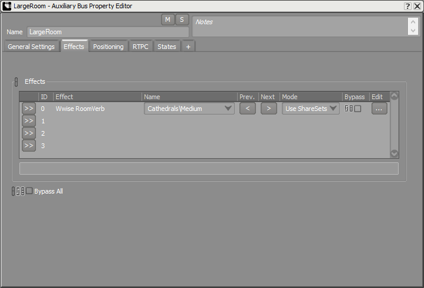
Auxiliary Bus Property Editor Effects tab for rooms
- Under the Positioning tab, enable Listener Relative Routing and select Position + Orientation for the 3D Spatialization.
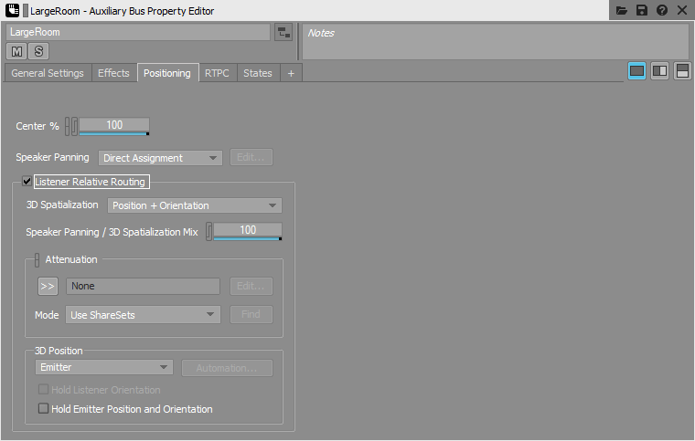
Auxiliary Bus Property Editor Positioning tab for Rooms
- Project > Project Settings > Obstruction/Occlusion
- Change the curves:
| Curve | Point 1 | Point 2 |
| X | Y | X | Y |
| Obstruction Volume | 0 | 0 | 100 | -3 |
| Obstruction LPF | 0 | 0 | 100 | 60 |
- Here's how the Obstruction Volume curve looks like:
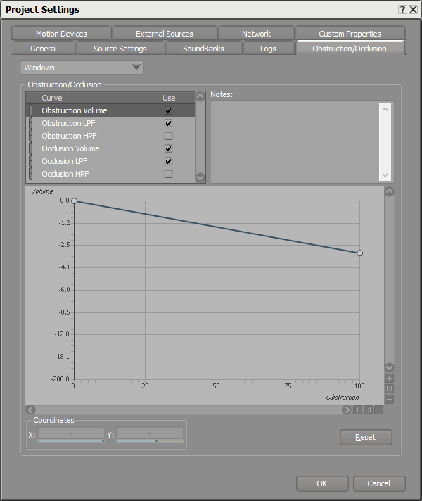
Obstruction/Occlusion curves in the Wwise Project Settings
- Save your project.
We need to modify the spatial audio emitter to use our newly created reflect aux bus.
- Refresh your Wwise project in the Wwise Picker: Windows > Wwise Picker
- Generate SoundBanks
- Modify the Ak Spatial Audio Emitter component of each button.
- Apply a gain of 1 for the Room Reverb Aux Bus Gain parameter.
- Check Draw Sound Propagation under Debug Draw and uncheck all the others.
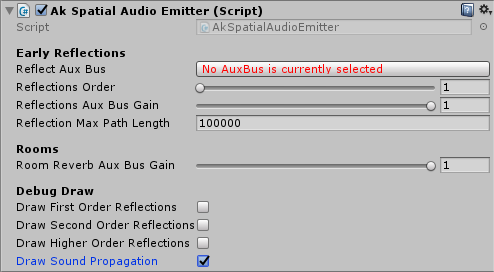
Ak Spatial Audio Emitter for Rooms and Portals
- We will use rooms in the next section, so we need to add a Rigidbody component to our emitter; as explained in the warning message on the Ak Game Obj component.
- Click on Add Rigidbody
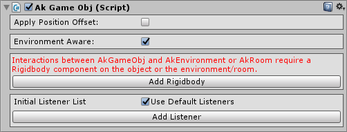
Ak Game Obj component
Each of the rooms will have their own room reverb. To do so, we will use the Ak Room component.
- Create unrendered meshes using cubes: GameObject > 3D Object > Cube
| Object Name | Position | Rotation | Scale |
| Small Room Interior | (-2, 2.875, -6) | (0, 0, 0) | (11, 5.25, 7.5) |
| Large Room Interior | (11.5, 2.875, 3.25) | (0, 0, 0) | (15, 5.25, 21) |
- Remove the Mesh Renderer component.
- Check the Is Trigger in the Box Collider component.
- Add an Ak Room component to the Small and Large Room Interior Volumes.
- Pick the corresponding SmallRoom or LargeRoom Auxiliary Busses for Reverb Aux Bus.
- If you added a Rigidbody to your emitters, you don't need one here. If not, click on Add Rigidbody.
- Start the game, connect to Wwise and go to the Game Object Profiler layout
- Watch all the emitters and the listener.
- Open a Game Object 3D Viewer view. You should see each emitter in their respective rooms. The next image is a top view of the scene. The listener and Button Outside are not in a room, so they are put by default in the "Outdoors" room. If everything is in the Outdoors room instead of their respective rooms, it means spatial audio is disabled. You must have forgotten to add an Ak Spatial Audio Listener component to the listener. Follow step 3.B.
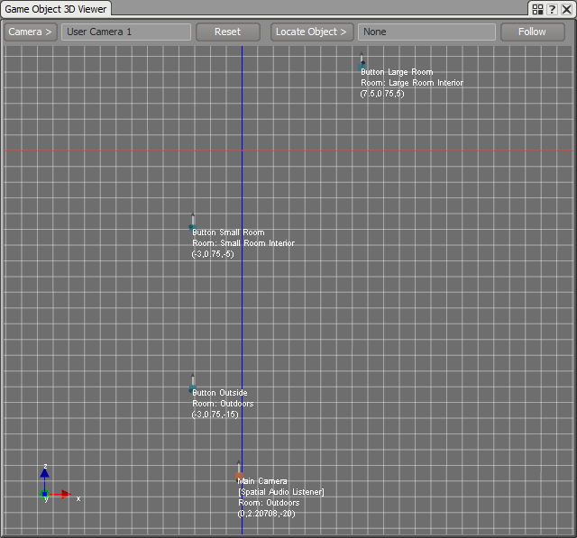
Emitters in their respective rooms and the Listener Outdoors
- Move the listener to a room and see the room name change under your listener game object in the Game Object 3d Viewer. In the following image, the listener is in the large room.
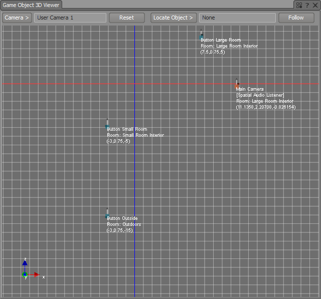
Emitters in their respective rooms and the Listener in the Large Room Interior
- Press the button in one of the rooms to hear the reverb.
- In the small room, the voice graph should look like this:
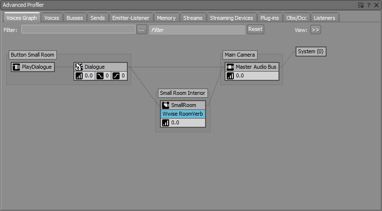
Button Small Room Voice Graph with Reverb
- When a listener is in a different room than the emitter, the sound is completely occluded. You will need to add portals to hear the sound coming from rooms through desired openings.
add a reverb outside, add a Room around the entire area. Make sure that the Room has a lower priority than the Small Room Interior and Large Room Interior.
Each Room needs a Portal to be connected to another area. We need two Portals: one on the door between the outside area and the small Room and one between both Rooms.
- Create two Ak Room Portal components: GameObject > Wwise > Room Portal
| Object Name | Position | Rotation | Scale |
| Outside Portal | (0, 2, -10) | (0, 0, 0) | (2, 4, 2) |
| Inside Portal | (3.75, 2, -4.5) | (0, 90, 0) | (3.5, 4, 2) |
- In the Ak Room Portal component:
- Open On Start.
- Close On Nothing.
- Make sure that the Back Room and Front Room display the right Ak Room components.
- This is how the Inside Portal Ak Room Portal component will look like:
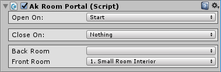
Ak Room Portal component
- In the Scene window, a Portal is represented with a yellow ribbon around it indicating its size and the orientation in which it should be placed. The red line shows the separation between front and back areas of the Portal. The front is in the same direction as the local z axis.
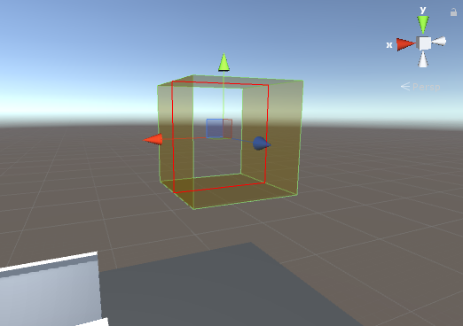
Ak Room Portal in the Scene window
- Start the game. You should already see the Draw Sound Propagation drawings indicating where the sound will be coming from through the portal. The sphere on the left comes from the small room emitter and the one on the right from the large room emitter. You can see the latter is actually coming from the Portal connecting the small and large Rooms. The sound propagation is represented by red and blue spheres that change in size depending on the wet and dry diffraction angles respectively.
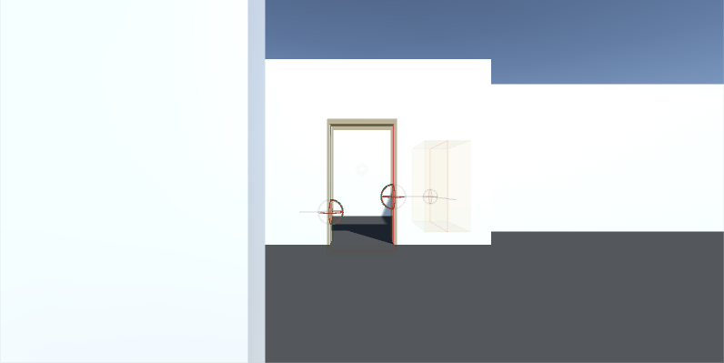
Game window at Start
- Connect to Wwise.
- Play the button outside and go inside the small room.
- You should see the same sound propagation drawings coming from the outside emitter through the portal connecting with the outside.
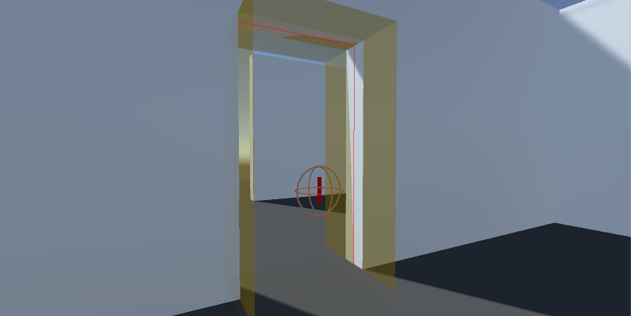
Sound Propagation drawings from Button Outside when the listener is inside Small Room Interior
- Move in and out of sight to hear the diffraction applied on the sound. You will hear more or less diffraction depending on the angle of the listener vs. the portal. In the next image, we are watching the listener and Button Outside. You can see a top view of the scene in the Game Object 3D Viewer. In dark red, we can see the portals. The one in the middle is the Outside Portal, the area on top of the Portal is the Small Room Interior and the area on the bottom is the outside. The Listener is in the Small Room Interior and the playing emitter is Button Outside. On the image, you can see the sound propagation in green between the listener and the emitter. The Diffraction angle is 103.3. Also, you can see the virtual position of the Button Outside emitter on the right. That's where the sound you hear will go through the portal.
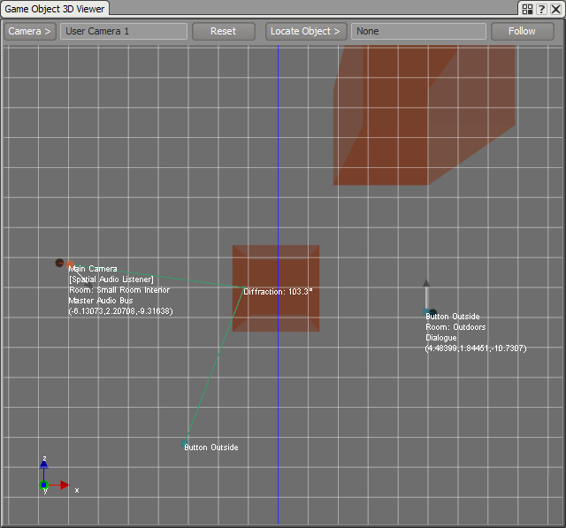
Portal diffraction angle on Game Object 3D Viewer
Sound emitted through Portals can also use the reverb from the current Room the listener is in.
- Open the SmallRoom Auxiliary Bus Property Editor and check Use game-defined auxiliary sends in the General Settings tab. This will send the small Room reverb to other reverbs in the scene.
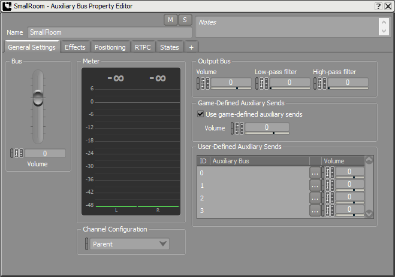
Auxiliary Bus Property Editor General Settings tab to send room reverb to other reverbs
- When playing the small room emitter, and going into the large room, you will see the small room's reverb feeding into the large room's reverb.
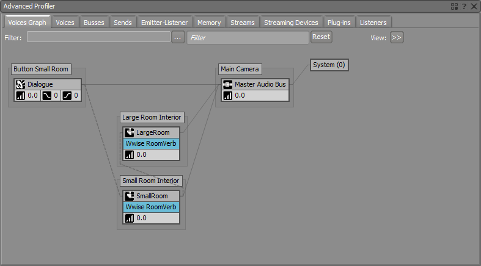
Button Small Room reverb sending to Large Room Interior room's reverb on the Voices Graph
It is also possible to feed early reflections into the reverb of a Room. Let's add surface reflectors in our scene.
- Following section Surface Reflectors Tutorial,
- Add an Auxiliary Bus with the Reflect Effect.
- Link each Ak Spatial Audio Emitter to the new Reflect Auxiliary Bus.
- Add Ak Surface Reflector components on all the walls and the floor.
- In the Wwise project, open the Auxiliary Bus with the Reflect Effect applied to it.
- In the General Settings tab, check Use game-defined auxiliary sends.
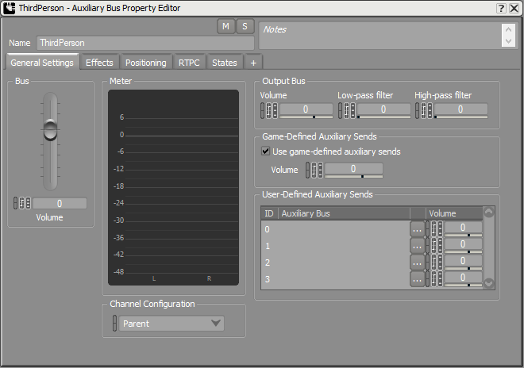
Auxiliary Bus Property Editor General Settings tab to send early reflection to the room reverb
- Play the scene and press the button in the small Room. With the player in the small Room, here is the Voices Graph we see:
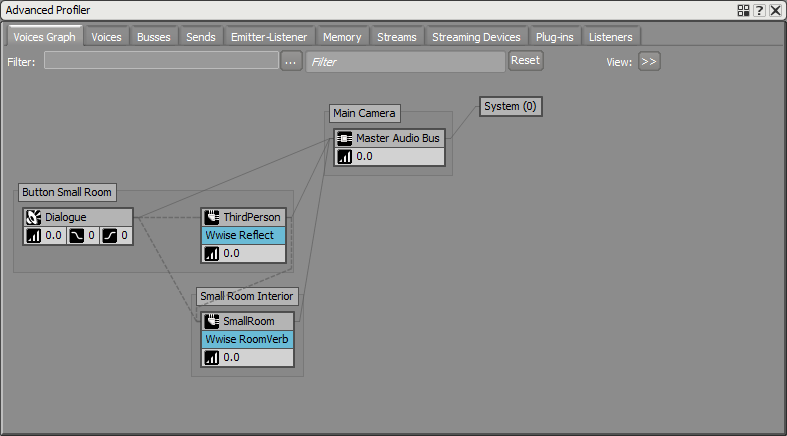
Early reflections in the small room are sent to the small room's reverb in the Voices Graph